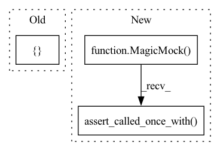

Pattern ID :19912
Before Change
Assert an error is raised when called the prime prior if is not enabled.
reparam.has_prime_prior = False
x = {"theta": [ 1.0After Change
)
reparam._k = 0.5
reparam._prime_prior = MagicMock(return_value=0.5)
reparam.has_prior_prior = True
reparam.prime_parameters = ["x", "y"]
out = Angle.x_prime_log_prior(reparam, x_prime)
reparam._prime_prior.assert_called_once_with(
x_prime["x"],
x_prime["y"],
k=0.5,
)
assert out == 0.5
def test_x_prime_log_prior_error(reparam):In pattern: SUPERPATTERN
Frequency: 3
Non-data size: 3
Instances Fragment ID: 64674658
Project Name: mj-will/nessai
Commit Name: b53fe855e019f16687e61e99ebb0249d9efb969a
Time: 2022-01-25
Author: michaeljw1@googlemail.com
File Name: tests/test_reparameterisations/test_angle.py
M Class Name: AnonimousClass
N Class Name: AnonimousClass
M Method Name: test_x_prime_log_prior(1)
N Method Name: test_x_prime_log_prior(1)
M Parent Class:
N Parent Class:
M File Name: tests/test_reparameterisations/test_angle.py
N File Name: tests/test_reparameterisations/test_angle.py
M Start Line: 153
M End Line: 157
N Start Line: 155
N End Line: 171
Before Change
model.likelihood_evaluations = 1
obj._uninformed_proposal = MagicMock()
obj._flow_proposal = MagicMock()
obj.likelihood_evaluations = [ 2, 3After Change
obj = MagicMock()
obj.model = model
obj._uninformed_proposal = MagicMock()
obj._uninformed_proposal.resume = MagicMock()
obj._flow_proposal = MagicMock()
obj._flow_proposal.resume = MagicMock()
weights_file = "weight.pt"
flow_config = dict(a=1)
with patch(
"nessai.samplers.base.BaseNestedSampler.resume", return_value=obj
) as mock:
out = NestedSampler.resume(
"test.pkl",
model,
flow_config=flow_config,
weights_file=weights_file,
)
assert out is obj
mock.assert_called_once_with("test.pkl", model)
obj._uninformed_proposal.resume.assert_called_once_with(
model,
)
obj._flow_proposal.resume.assert_called_once_with(
model,
flow_config,
weights_file, Fragment ID: 64674657
Project Name: mj-will/nessai
Commit Name: 7a5a304ee2d7b313deb71bc709f3e1b2543dd3a7
Time: 2022-08-29
Author: m.williams.4@research.gla.ac.uk
File Name: tests/test_samplers/test_nested_sampler/test_resume.py
M Class Name: AnonimousClass
N Class Name: AnonimousClass
M Method Name: test_resume(1)
N Method Name: test_resume(1)
M Parent Class:
N Parent Class:
M File Name: tests/test_samplers/test_nested_sampler/test_resume.py
N File Name: tests/test_samplers/test_nested_sampler/test_resume.py
M Start Line: 88
M End Line: 103
N Start Line: 55
N End Line: 83
Before Change
proposal.marginalise_augment = marg
proposal.augmented_prior = MagicMock()
proposal.model = MagicMock()
proposal.model.names = [ "x", "y"After Change
@patch("nessai.proposal.flowproposal.FlowProposal.log_prior", return_value=1)
def test_log_prior(mock_prior, proposal, x):
Test the complete log prior
proposal.augmented_prior = MagicMock(return_value=1)
log_p = AugmentedFlowProposal.log_prior(proposal, x)
mock_prior.assert_called_once_with(x)
proposal.augmented_prior.assert_called_once_with( x)
assert log_p == 2
@patch("nessai.proposal.flowproposal.FlowProposal.x_prime_log_prior", Fragment ID: 64674662
Project Name: mj-will/nessai
Commit Name: 693fda5f8a93797c2dfaaa1abd98cbbaf4a1f0ea
Time: 2021-04-12
Author: m.williams.4@research.gla.ac.uk
File Name: tests/test_proposal/test_augmented.py
M Class Name: AnonimousClass
N Class Name: AnonimousClass
M Method Name: test_log_prior(3)
N Method Name: test_log_prior(3)
M Parent Class:
N Parent Class:
M File Name: tests/test_proposal/test_augmented.py
N File Name: tests/test_proposal/test_augmented.py
M Start Line: 135
M End Line: 147
N Start Line: 139
N End Line: 147